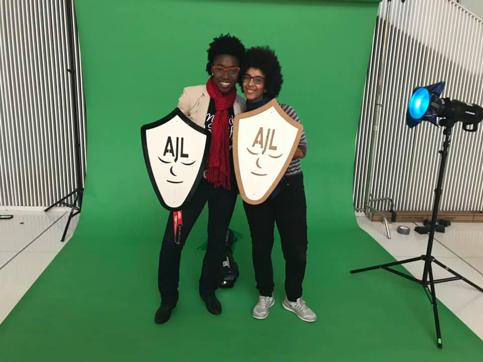

“When I started this work as a graduate student, I could not have imagined this level of impact. I am grateful to all of the collaborators that made Gender Shades possible. The Algorithmic Justice League will continue fighting for the excoded, those negatively impacted by AI.”
- Dr. Buolamwini
The Gender Shades Project began in 2016 as the focus of Dr. Buolamwini’s MIT master’s thesis inspired by her struggles with face detection systems. In 2018, she and Dr. Timnit Gebru subsequently published the widely known Gender Shades paper. This research used the computer vision task of gender classification (guessing the gender of an individual from a headshot image) to powerfully demonstrate algorithmic bias from IBM, Microsoft, and Face++. Subsequently, the Actionable Auditing research conducted by Dr. Buolamwini and Deborah Raji demonstrated similar disparities with Amazon. With more than 3400 citations, the Gender Shades paper has shaped industry practice, policy agendas, and academic research around facial recognition technologies, algorithmic auditing, and AI harms. The implications of the paper have also been used in advocacy campaigns and litigation focused on resisting harmful use of facial recognition technologies. The research is also heavily featured in the Emmy-nominated documentary Coded Bias available on Netfilx.
The major tech companies evaluated during the duration of the project all made commitments to varying degrees to stop selling facial recognition technologies to police in the wake of the murder of George Floyd and growing opposition to biometric surveillance. Notably, IBM no longer produces facial recognition or analysis software. Microsoft announced that they will retire face-based gender classification in 2023, “we have opted to not support a general-purpose system in the Face API that purports to infer emotional states, gender, age, smile, facial hair, hair, and makeup.”
As part of the 5th Anniversary Celebration, the Algorithmic Justice League is releasing a commemorative visualization and will be making available for the first time the original API responses. We have also selected Robert Williams the first Gender Shades Justice Award recipient. He was wrongfully arrested in front of his family after a facial recognition system misidentified him. He has courageously spoken out about his experiences. As researchers and practitioners explore pathways to equitable and accountable AI, let us keep in mind that we can create a world where data is not destiny and your hue is not a cue to dismiss your humanity.
The original Pilot Parliaments Benchmark included publicly available images of parliamentarians from six countries. Many of these face images are now protected under GDPR, so we will no longer be providing the original Pilot Parliaments Benchmark. For the fifth year anniversary, we are releasing a new dataset GS5-API-Results that contains the original API results used in the 2018 paper. We hope this dataset will enable retrospective research while maintaining our commitment to equitable and accountable AI.
We use the open source plausible.io analytics system to track activity on this website, including page views and data downloads. We do not store Cookies, IP addresses, or any other personal data. All analytics data is stored in aggregate only.